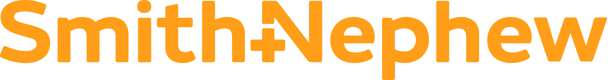
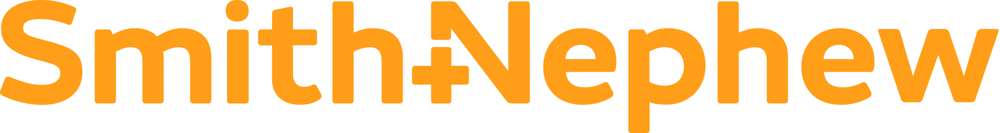

About Me
Personal and Professional Bio

I am a creative and hardworking multi-cultural young professional, currently working as a Product Manager in Fintech.
I spent the earlier part of my childhood in France, where my family is from, before moving to New York where I learned English and integrated into American culture. I went to the Georgia Institute of Technology to get a Bachelor's degree in Biomedical Engineering, and then started my career in Memphis as a Quality Engineer for Smith&Nephew, an orthopedics medical device company.
 
My work on high-stakes Health Hazard Evaluations gave me a lot of exposure to upper management and executives, which led to being offered a position on the company's Greenfield Project in Malaysia as the first quality engineer on the team. I joined this fun "blank slate' project, where my global team began planning for the construction and operation of a new state-of-the-art manufacturing facility. After a year on the project, I was offered an expatriate position in Malaysia to help with the implementation of the plans.
I accepted the position and moved to Malaysia in May 2021. During this assignment, I learned to adapt to a new working environment and culture, and to lead others much more senior than myself. My team and I successfully implemented a Quality Management System that passed ISO certification with no-nonconformances, and I was able to begin digital transformation efforts by outlining software requirements for the facility.
I felt that technology implementation was moving too fast and realized that I wanted to move into a position closer to the product itself, so I applied to MBAs focused on the technology sector. Knowing that I wanted to move to the tech industry, I chose to attend the NYU Tech MBA and began the program in May 2022 in New York.
This MBA has taught me the business basics I did not have, and also allowed me to expand my technical skills. I learned to use machine learning models, to develop websites, to utilize SQL and python for data analysis, and the basic principles of DevOps. Beginning in September 2022, I decided to begin working part-time as I continued my full-time MBA. I took a Product Management job at a FinTech company in New York City, where I learned about payments and how to lead a pod through feature development and releases. Since then, I've had a chance to work on reworking the user onboarding flow, implementing user education to incease engagement, adding data visualizations to our Home Page in an effort to move towards spend management, and exploring what a move towards becoming a subscription product would look like (ongoing).

Overall, I am driven and very hardworking: I love to use challenging situations to learn new things and further my career. I can adapt easily to new environments. Finally, I am a very organized and creative problem solver with a passion for technology.